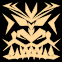
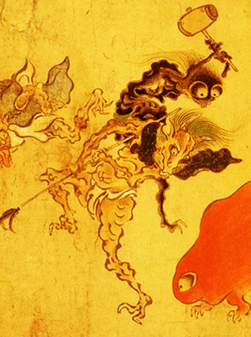

鬼は、日本の妖怪。民話や郷土信仰に登場する悪い物、恐ろしい物、強い物を象徴する存在である。「鬼」という言葉には「強い」「悪い」「怖い」「ものすごい」という意味もある。
DEMON
Demons, Japanese monsters. Bad things that appear in the folklore and local faith, horrible things, it is the presence that symbolizes the strong ones. The word "demon" is also the sense of a "strong" and "bad" and "scary," "tremendous".

gaki01_PT
7/27